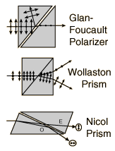

Prisms for PolarizationA number of polarizing prisms have been devised which make use of birefringence to separate two beams in a crystalline material. Often they make use of total internal reflection.  |
Index Polarization concepts | ||
|
Go Back |
Nicol PrismPolarization can be achieved with crystalline materials which have a different index of refraction in different crystal planes. Such materials are said to be birefringent or doubly refracting.
|
Index Polarization concepts | |||
|
Go Back |